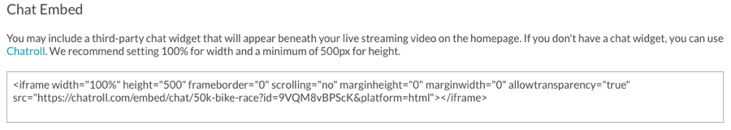

---
title:為門戶事件體驗創建實時事件狀態
parent: Live Event 
grandparent: Experiences
description: In this topic you will learn how to create the live event state for a Live Event Portal Experience. 
---

<article class="bcls-article">
  <h1>為門戶事件體驗創建現場事件狀態</h1>
  <summary>{{ page.description }}</summary>
  <section class="bcls-section">
    <p>實時事件門戶模板提供<a href="/experiences/live/creating-pre-event-state-portal-event-experience.html">賽前</a>，現場活動，<a href="/experiences/live/creating-post-event-state-portal-event-experience.html">事後</a>，視頻存檔和視頻詳細信息頁面模板。您可以自訂這些頁面範本，讓網站在現場活動之前、期間和之後有不同的外觀。即時事件狀態是網站在即時事件期間顯示的內容。</p>
    <p>要為站點創建實時事件主頁狀態，請創建一個新的門戶&nbsp;使用Live Event Portal模板的經驗。在圖庫網站編輯器中，單擊<strong>頁數</strong>在左側導航中，然後單擊<strong>主頁：居住</strong>。</p>
  </section>
  <section class="bcls-section">
    <figure class="bcls-figure"></figure>
    <p>即時事件首頁狀態提供下列內容區域。</p>
    <figure class="bcls-figure"></figure>
    <ul>
      <li><strong>A-主頁徽標和名稱</strong> -用於將查看器返回首頁。這裡有兩個佔位符，所以你可以選擇有一個圖像後跟文本例如。</li>
      <li><strong>B-鏈接到視頻存檔</strong> -用於查看已為該網站創建的所有視頻集。</li>
      <li><strong>C-Twitter設置</strong> -提供使用Twitter feed小部件的功能。看<a href="#twitter">配置Twitter提要</a>。</li>
      <li><strong>D-背景圖片</strong> -用於添加背景圖像</li>
      <li><strong>E-實時視頻設置</strong> -用於配置實時視頻ID。看<a href="#live">配置實況視頻</a>。</li>
      <li><strong>F-直播活動名稱</strong> -靜態短信</li>
      <li><strong>G-“立即發生"指示器</strong> -隱藏/顯示“正在發生"指示</li>
      <li><strong>H-聊天設置</strong> -嵌入第三方聊天小部件（例如Chatroll）的可選區域。看<a href="#chat">配置聊天小部件</a>。</li>
      <li><strong>一世 -視頻網格盒</strong> -用於添加號召性用語，包括自定義HTML或圖像。看<a href="/experiences/portal/configuring-calls-action-portal-experience.html">在門戶網站體驗上配置號召性用語</a>想要查詢更多的信息。</li>
      <li><strong>J-頁腳對象</strong> -用於添加文本和頁面頁腳的鏈接</li>
    </ul>
    <p>有關將圖像，鏈接和文本添加到門戶網站頁面模板的信息，請參閱<a href="/experiences/portal/customizing-content-portal-experience-pages.html">定制門戶網站體驗頁面的內容</a>。</p>
    <aside class="bcls-aside bcls-aside--information">筆記：網站顏色將根據所選主題而有所不同。</aside>
  </section>
  <section class="bcls-section">
    <h2 id="twitter">設定推特動態消息</h2>
    <p>該網站可以配置在頁面上的 Twitter 嵌入。對於可用的嵌入類型，請檢查<a href="https://publish.twitter.com">Twitter網站</a>。一個樣本喜歡的時間軸如下所示。</p>
    <figure class="bcls-figure"></figure>
    <p>若要新增 Twitter 動態消息，請依照下列步驟執行：</p>
    <ol class="bcls-tasklist-restart">
      <li><a href="https://publish.twitter.com/">在Twitter站點上創建一個小部件</a>。有關創建Twitter小部件的幫助，請參閱<a href="https://developer.twitter.com/en/docs/twitter-for-websites/timelines/overview">Twitter開發人員文檔</a>。</li>
      <li>點擊<strong>Twitter設置</strong>頁面上的鏈接。</li>
      <li>複製Twitter小部件的HTML並將其粘貼到<strong>Twitter的飼料</strong>設置。
        <figure class="bcls-figure"></figure>
      </li>
      <li>點擊<strong>保存</strong>。</li>
    </ol>
  </section>
  <section class="bcls-section">
    <h2 id="live">設定即時視訊</h2>
    <p>點擊<strong>配置實時視頻</strong>鏈接，使用來配置實時視頻設置<strong>影片編號</strong>或者<strong>參考編號</strong>實況視頻資產。使用視訊 ID 時，每次建立新的即時活動時，都必須使用新的視訊 ID 更新體驗。使用參考 ID 可提供更大的彈性。建立新的直播活動時，只要將指定的參照 ID 指定給媒體模組中的新視訊，不需要變更體驗即可。</p>
    <figure class="bcls-figure"></figure>
    <div>
      <h3>尋找視訊 ID</h3>
      <p>您可以使用下列其中一種方法找到視訊 ID：</p>
      <ol class="bcls-tasklist-restart">
        <li>視訊 ID 會顯示在「媒體」模組中的視訊標題下方。
          <figure class="bcls-figure"></figure>
        </li>
        <li>視訊 ID 會顯示在即時模組內的事件名稱下方。
          <figure class="bcls-figure"></figure>
        </li>
      </ol>
    </div>
    <div>
      <h3>尋找參考 ID</h3>
      <p>參考 ID 可以使用媒體模組找到。</p>
      <figure class="bcls-figure"></figure>
    </div>
  </section>
  <section class="bcls-section">
    <h2 id="chat">設定聊天小工具</h2>
    <p>該網站可以配置為在頁面上顯示第三方聊天小工具。例如，使用<a href="https://chatroll.com">聊天記錄</a>，您可以將HTML代碼嵌入頁面中，以將在線聊天功能添加到Gallery網站。聊天範例如下所示。</p>
    <figure class="bcls-figure"></figure>
    <p>若要新增第三方聊天 Widget，請按照下列步驟操作：</p>
    <ol class="bcls-tasklist-restart">
      <li>點擊<strong>聊天設置</strong>頁面上的鏈接。</li>
      <li>複製聊天小工具的 HTML，然後將其貼到「聊天內嵌」設定中。
        <figure class="bcls-figure"></figure>
      </li>
      <li>點擊<strong>保存</strong>。</li>
    </ol>
  </section>
</article>